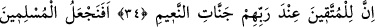
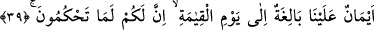
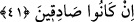

YOKSA ORTAKLARI MI
VAR ONLARIN?
34. Şu da muhakkak ki, takvâ sâhipleri için Rableri katında nimetleri bol
cennetler vardır.
35. Öyle ya, (Allah’a) teslimiyet gösterenleri, (o) günahkârlar gibi tutar mıyız
hiç?
36. Size ne oluyor? Ne biçim hüküm veriyorsunuz?
37. Yoksa size âid bir kitap var da, (bu bâtıl inanışları) onda mı okuyorsunuz?
38. Onda, beğendiğiniz her şey sizin için mutlaka vardır (diye mi yazılı)?
39. Yoksa, «Ne hükmederseniz mutlaka sizindir» diye sizin lehinize olarak
tarafımızdan verilmiş, kıyâmet gününe kadar geçerli kesin sözler mi var?
40. Sor onlara: Bu iddiâyı onların hangisi savunacak?
41. Yoksa ortakları mı var onların? Sözlerinde doğru iseler, hadi getirsinler
ortaklarını!
“Şüphesiz küfür” ve günahlardan “sakınanlar için” âhirette “Rableri katında
nimetleri bol cennetler vardır.” Burada “katında” şeklinde tercüme ettiğimiz “ınde”
kelimesinin kullanılması, o nimete şeref katmak ve değerli olduklarını vurgulamak
içindir. Çünkü âhirette Allah’tan başka hiç kimsenin ne gerçekten ve ne de sûreten
mülkü yoktur. Bu nimetler sanki Allah katında hazır ve mevcuddur. Allah, o nimetler
hakkında dilediği gibi tasarrufta bulunur. Âyeti bu şekilde anlamayacak olursak cennetin
Allah’ın katında bulunuşu, mekân bakımından olur ki bu da imkânsızdır. Arapça
dilbilgisi kuralları açısından “ınde” kelimesi, “muttakîn” kelimesinin bağlanmış olduğu
“istıkrar” şibh-i fiilinin mâmûlüdür. Bunun, “lil muttakîn” ifâdesinde dikkate alınmış
mahzuf bir kelimeden hâl olmak üzere o kelimenin mutaallakı olması da mümkündür. Bu
sözcüğün, “cennât” kelimesinden hâl olması mümkün değildir. Çünkü ortada âmil
yoktur. Tercîhe şayan olan görüşe göre “ınde rabbihim” ifâdesinin mânâsı, “O’nun